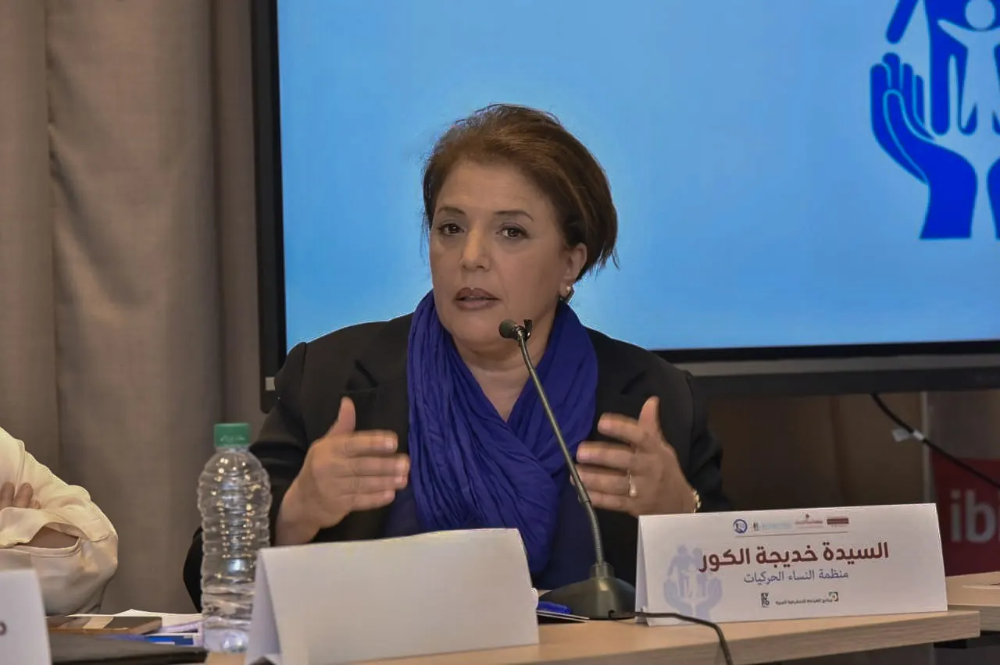

أثار تصريح وزير السياحة والصناعة التقليدية والاقتصاد الاجتماعي والتضامني، جلال شرف، أمام البرلمان، موجة من الاستياء والانتقادات على مواقع التواصل الاجتماعي، بعدما دافع عن ارتفاع أسعار الفنادق بمراكش بمنطق العرض والطلب، قبل أن يدلي بعبارة أثارت جدلاً واسعاً: «مراكش خليها للناس اللي عندهم الفلوس، ونمشيو حنا لجهة أخرى».
ولم يكن الغضب الشعبي نابعاً من رفض المغاربة لقوانين السوق أو لحق المستثمرين في تحقيق الأرباح، بل من الدلالة الاجتماعية والسياسية لتصريح صادر عن مسؤول حكومي يفترض فيه أن يبحث عن سبل توسيع استفادة المواطنين من السياحة الوطنية، لا أن يقترح عليهم الابتعاد عن وجهاتها الأكثر جاذبية عندما تتجاوز الأسعار قدراتهم الشرائية.
والواقع أن الإشكال لا يتعلق بوجود فنادق فاخرة في مراكش، فالمدينة تحتاج إلى استثمارات متنوعة تعزز إشعاعها الدولي، وإنما بمدى قدرة السياسة العمومية على ضمان عرض سياحي متعدد المستويات، يسمح للمواطن المغربي بالاستمتاع بمؤهلات بلاده دون أن تصبح بعض وجهاتها امتيازاً طبقياً.
اقرأ المقال كاملاً على أنفاس بريس ←
كل المقالات
مقتطف من مقال نُشر في أنفاس بريس.
مقالات أخرى
تواصل وصحافة
للصحفيين والمنظمين
لطلبات المقابلات والمشاركة في الندوات والبرامج، أو للحصول على صور رسمية وسيرة مختصرة.